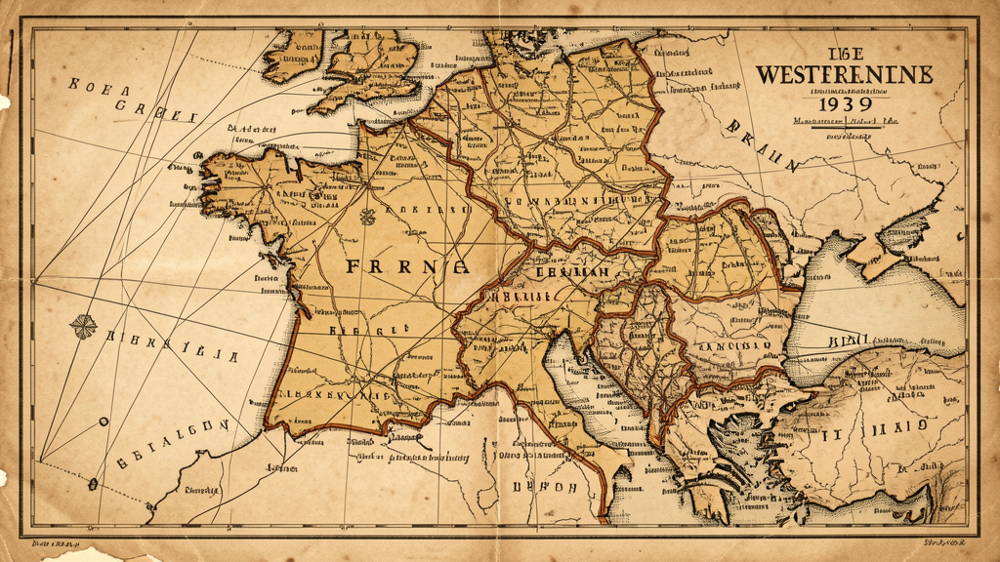

September 1939 – April 1940
The Phoney War
Western Front
🇬🇧United Kingdom🇫🇷France🇩🇪Germany
On September third, nineteen thirty-nine, Britain and France declared war on Germany. And then... nothing. For eight months, the world held its breath. They called it the Phoney War. Soldiers dug trenches in parks that children had played in just days before. Mothers sent their children away to the countryside, clutching gas masks they prayed would never be needed. In the silence between thunder, life tried to continue as if the world had not already changed forever.

Map: Western Front
Before the storm, the world whispered instead of shouting.